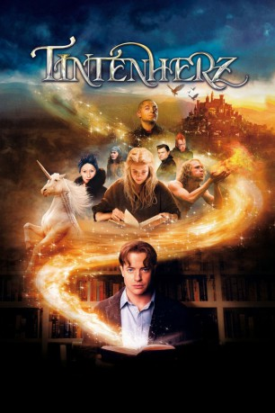
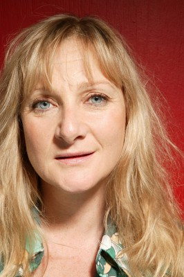

#10034 Tintenherz
 
 IMDB-Wertung: 6.1 / 10
IMDB-Wertung: 6.1 / 10  Metascore: 0
Metascore: 0 
Meggie Folchart lebt mit ihrem Vater Mo, der Bücher restauriert, in einem alten Haus. Eines Nachts warnt ein unheimlicher Gast ihn vor jemandem namens Capricorn. Überstürzt flüchtet Mo daraufhin mit Meggie zu ihrer Tante Elinor und ihrer kostbaren Bibliothek. Ihre Verfolger sind ihnen bereits dicht auf den Fersen. Meggie erfährt von Zauberzunge, der Buchfiguren real werden lassen kann.
Jahr: 2008
Dauer: 106 Minuten
FSK: 12
Land: Deutschland Studio: Warner Bros.Tonspuren: DD5.1 - ,
Untertitel: Deutsch,
Auflösung: 1080p (1920x816) Größe: 4843 MB
Genre: Abenteuer, Fantasy, Familie
Regisseur: Iain Softley
Drehbuch: David Lindsay-Abaire, Cornelia Funke
Soundtrack: Javier Navarrete
Darsteller:
 Brendan Fraser als Mo
Brendan Fraser als Mo Sienna Guillory als Resa
Sienna Guillory als Resa- Eliza Bennett als Meggie
 Richard Strange als Bookshop Proprietor
Richard Strange als Bookshop Proprietor Paul Bettany als Dustfinger
Paul Bettany als Dustfinger Helen Mirren als Elinor
Helen Mirren als Elinor Matt King als Cockerell
Matt King als Cockerell- Steve Speirs als Flatnose
 Jamie Foreman als Basta
Jamie Foreman als Basta Stephen Graham als Fulvio
Stephen Graham als Fulvio Andy Serkis als Capricorn
Andy Serkis als Capricorn- John Thomson als Darius
-  Lesley Sharp als Mortola
- Tereza Srbova als Rapunzel
 Rafi Gavron als Farid
Rafi Gavron als Farid Jennifer Connelly als Roxanne
Jennifer Connelly als Roxanne Jim Broadbent als Fenoglio
Jim Broadbent als Fenoglio Roger Allam als Narrator
Roger Allam als Narrator- Helen Soraya als Masquerade Ball Dancer
 Paul Kasey als Minotaur
Paul Kasey als Minotaur- Marnix Van Den Broeke als The Shadow
 Jessie Cave als Water Nymph (uncredited)
Jessie Cave als Water Nymph (uncredited)- Michael Lindall als Recruit (uncredited)
- Mirabel O'Keefe als Young Meggie
- Matthew Bower als Masquerade Ball Dancer
- Rod Buchanan als Masquerade Ball Dancer
- Terry Cavanagh als Masquerade Ball Dancer
- Tara Donelly als Masquerade Ball Dancer
- Faith Erde als Masquerade Ball Dancer
- Clayton Fussell als Masquerade Ball Dancer
- Anna Gamester als Masquerade Ball Dancer
- Pippa Gebette als Masquerade Ball Dancer
- Keeran Greener als Masquerade Ball Dancer
- Jessica Grist als Masquerade Ball Dancer
- Eloise Horwood als Masquerade Ball Dancer
- James Horwood als Masquerade Ball Dancer
- Gow Hunter als Masquerade Ball Dancer
- Alice Jackson als Masquerade Ball Dancer
- Ceri Jerome als Masquerade Ball Dancer
- Alec Mann als Masquerade Ball Dancer
- Jamie Meek als Masquerade Ball Dancer
- Cassie Newby als Masquerade Ball Dancer
- Alex Argenti als Cop's Wife (uncredited)
- Stephen Armourae als Medieval Lord (uncredited)
- Clive Dancey als Black Jacket (uncredited)
- Zuma Davies als Kazeem (uncredited)
- Adrian Gas als Masquerade Ball Dancer (uncredited)
- Anthony Harwood als Recruit (uncredited)
- Maurice D. Hunt als Guard (uncredited)
- Lanre Malaolu als Black Jacket (uncredited)
Datei: X:\2008(N-Z)\Tintenherz (2008, FSK12, 1920x816).mkv seit 21.11.2018
Festplatte: HD 2008(G-Z)-2009(A-F)
 Es gibt insgesamt 91 Filme in der Gruppe '2008(N-Z)'
Es gibt insgesamt 91 Filme in der Gruppe '2008(N-Z)'